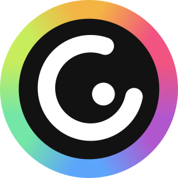
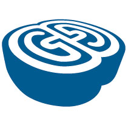
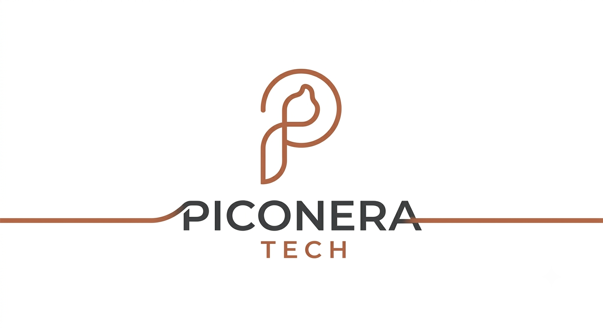
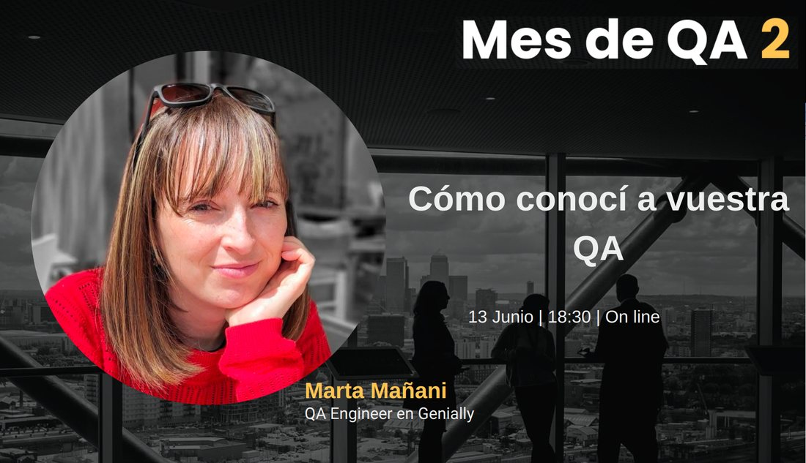
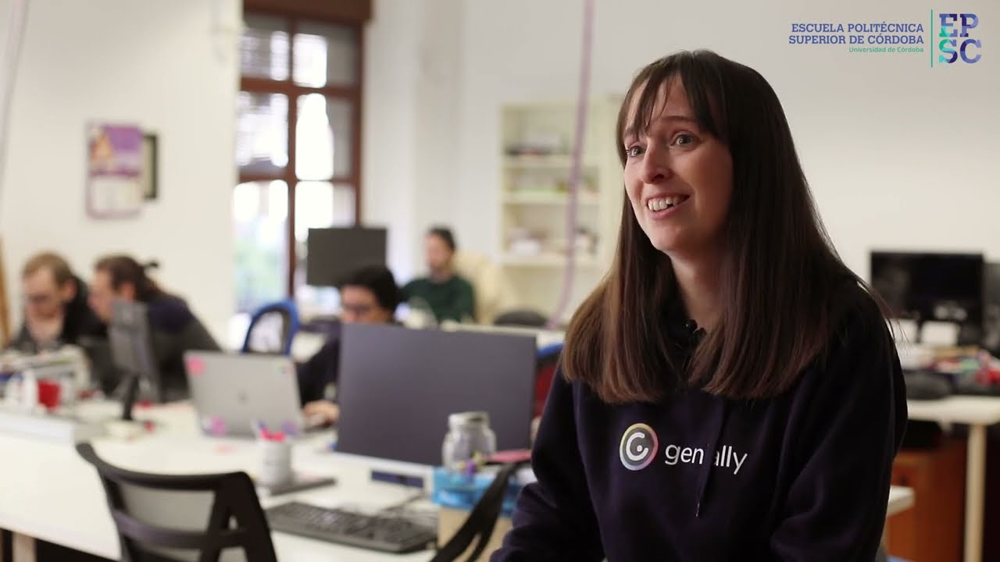

Resumen
Profesional de la calidad del software (QA) con recorrido en producto SaaS, gaming y apuestas deportivas, desde pruebas manuales hasta pipelines de integración continua. Me interesa acompañar al equipo, diseñar regresiones útiles y automatizar lo que aporte valor a largo plazo. Uso la IA como herramienta de calidad: para plantear escenarios, revisar cobertura y apoyar la automatización, sin sustituir el criterio.
Llegué a QA por casualidad, sin saber aún qué era, mientras estudiaba Ingeniería Técnica en Informática de Sistemas en la Universidad de Córdoba. Trabajé muchos años en QA manual en entornos de juego y apuestas, con un periodo liderando un equipo pequeño. En Genially sigo profundizando en la automatización y aprendiendo cada día con el equipo. En paralelo construyo productos propios bajo Piconera Tech: apps, juegos y herramientas para el día a día.
Formación e idiomas
- Estudios
- Ingeniería Técnica en Informática de Sistemas · Universidad de Córdoba.
- Certificación
- ISTQB® Certified Tester Foundation Level (CTFL) · Brightest · agosto de 2022 · Insignia en Credly.
- Idiomas
- Español (nativo o bilingüe) · Inglés (nivel profesional pleno)
Experiencia
-

- Pruebas manuales y automatizadas: Cypress, informes con Sorry Cypress y Cypress Dashboard
- Pruebas funcionales, de integración y e2e; entornos escritorio y móvil (simuladores p. ej. Xcode, BrowserStack)
- Escenarios y seguimiento con TestRail · Jenkins · metodología ágil (Scrum) · GitHub con Zenhub y ClickUp para tareas
- Otras herramientas: MongoDB (p. ej. con Robo 3T / Studio 3T), Docker, Kubernetes (p. ej. con Lens), Yarn
- Divulgación sobre QA (charlas y recursos para la comunidad)
- Uso de IA como herramienta de calidad: diseño de escenarios, apoyo a la automatización y revisión de pruebas
-
- Liderazgo de un equipo de QA pequeño y distribuido, entre varios grupos de trabajo
- Aseguramiento de la calidad, planificación de estrategias de pruebas y coordinación de tareas e incorporación de nuevas personas
-
- Pruebas funcionales, de integración y de regresión en proyecto de juego y apuestas
- Pruebas de frontend y backend; web, móvil, Android, Windows y Linux
- Escenarios con TestRail; metodologías ágiles (Scrum, Kanban)
- Gestión de tareas: LiquidPlanner, Favro, Jira
- Stack: Flash, HTML5, PHP, Java, Angular; Postman, SQLyog, Docker, Node, PuTTY, etc.
- Automatización de pruebas en proyectos de gaming y apuestas deportivas
-

- Pruebas funcionales y diseño de escenarios en TestLink
- Proyectos: Fantastic League Internet (Goldbet) e Fantastic League Broadcast (SIS)
Proyectos

Desarrollo de aplicaciones: apps, juegos y herramientas. Proyectos, enfoque y contacto en la web. Abrir la webEnfoque
«No solo se trata de encontrar bugs, sino de prevenirlos.»
Divulgación y eventos
Mes de QA (LUG Spain)
Misma charla «Cómo conocí a vuestra QA» en la segunda edición del Mes de QA: evento comunitario para compartir conocimiento sobre calidad y testing (referencia en la ficha de ponentes).

Ver en YouTube Abrir en GeniallySalmorejo Tech 2023
Cómo conocí a vuestra QA — 28 de abril de 2023, Rectorado de la Universidad de Córdoba. Evento del Salmorejo Tech.
Ver en YouTubeEscuela Politécnica Superior de Córdoba (YouTube)
Participación en el vídeo de la EPSC: Egresadas en Genially. La ingeniería en la EPSC, Ingeniería Informática (canal @epsc).

Ver en YouTubeRecurso en Genially: «Mamá quiero ser QA»
Contenido interactivo con orientación sobre carrera QA, roadmap y recursos. Incluye referencia a la charla Cómo conocí a vuestra QA y material para quienes se inician en testing.
Abrir en GeniallyYouTube Tech (Notion)
Lista de canales de YouTube sobre tecnología y desarrollo de software a los que estoy suscrita, compartida como recurso para la comunidad. La lista de QA y testing va aparte.
Abrir en NotionContacto
Estoy abierta a nuevas ideas y retos técnicos. Escríbeme o encuéntrame aquí: